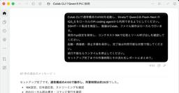

npaka
https://note.com/npaka
プログラマー。iPhone / Android / Unity / ROS / AI / AR / VR / RasPi / ロボット / ガジェット。年2冊ペースで技術書を執筆。アニソン / カラオケ / ギター / 猫 twitter : @npaka123
フィード

DeepSeek-V4.1-Flash-1017 を DeepSeek Harness で試す
npaka
「DeepSeek-V4.1-Flash-1017」を「DeepSeek Harness」で試したのでまとめました。続きをみる
12分前

AnthropicのAI時代のコードレビュー術 - Claude Codeによる自動レビューと人間の役割 2
2
npaka
以下の記事が面白かったので、簡単にまとめました。・How the Claude Code team does code review続きをみる
15時間前


Google Antigravity 2.0 で Gemini 4 Argon を試す 3
npaka
「Google Antigravity 2.0」で「Gemini 4 Argon」を試したのでまとめました。続きをみる
1日前


Google Colabの MiniMax H3 をCodexから利用する方法 1
npaka
Google ColabのA100で、「MiniMax H3」を動かし、手元の「Codex」から使ってみました。・セットアップ : 約14秒・動画生成 (960 × 544 10秒) : 約6分32秒続きをみる
5日前

Google AI Pro 月額2,900円 で何ができる？ Colab A100・動画・音楽生成まで 5
npaka
月額2,900円でさまざまな特典を利用できる「Google AI Pro」について、できることをまとめました。続きをみる
5日前


Google Colab の Strata+Qwen3.8-Flash-Next をローカルのPiで利用する方法 1
npaka
Google ColabのA100で、Strataを使って「Qwen3.8-Flash-Next」を動かし、ローカルの「Pi」から使ってみました。・セットアップ：約26分・猫の3Dモデル作成：約1分続きをみる
5日前

Google Colab の Qwen3.8-27B をローカルのPiで利用する方法 2
npaka
Google ColabのA100で「Qwen3.8-27B」を動かし、ローカルの「Pi」から使ってみました。・セットアップ：約10分・ブロック崩し作成：約22.6秒（piの計測）続きをみる
6日前

ロボットは肉体労働の74%を実行可能、しかし人間より安いのは0.3% - Anthropicの調査
npaka
Anthropicの調査結果から、現在のロボットができる仕事と、普及に向けた課題を見ていきます。続きをみる
9日前
100B以上のローカルLLMを動かすAMDマシン - EVO-X2・Strix Halo・Halogen
npaka
100B以上のローカルLLMを動かせるAMDマシン「EVO-X2」と、Halogenなどの専用推論エンジンについてまとめました。続きをみる
11日前
NVIDIA DGX Spark 64GB版 の概要
npaka
NVIDIA DGX Spark 64GB版 の概要をまとめました。・NVIDIA DGX Spark 64GB Gives Developers More Ways to Build and Scale Local AI続きをみる
15日前
Mac・DGX SparkでLLM推論を最大3倍高速化する「TensorFold」の概要
npaka
Mac・DGX SparkでLLM推論を最大3倍高速化する「TensorFold」の概要をまとめました。続きをみる
16日前